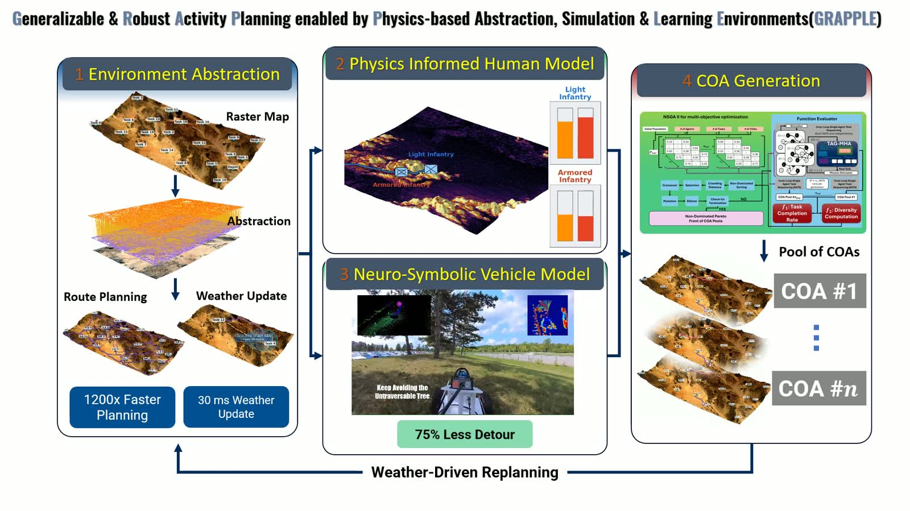

AI to Operations · University at Buffalo
GRAPPLE
Generalizable & Robust Activity Planning enabled by Physics-based Abstraction, Simulation & Learning Environments.

Research overview
Integrated planning for complex terrain
GRAPPLE investigates how to generate diverse, robust courses of action for missions spanning hundreds of miles, under changing terrain, weather, obstacle, and adversary information. The program combines graph-theoretic environment representations with physics-informed human and vehicle mobility models and graph learning for task planning.
Environment abstraction provides a shared terrain representation. Human and vehicle models describe agent-specific traversal costs. COA generation uses this information to allocate and sequence tasks, then revisits the plan pool when conditions change.

Research modules
Four modules. One planning workflow.
Environment abstraction, human and vehicle mobility models, and course-of-action generation. Explore the methods, demonstrations, and reported results for each module.
01Graph-theoretic environment representationsEnvironment AbstractionHierarchical terrain representations for efficient off-road route planning.MethodsDemonstrationReported results02Human mobility and energeticsPhysics Informed Human ModelTerrain, load, weather, and energy reserves in human traversal planning.MethodsDemonstrationReported results03Vehicle mobility and adaptive navigationNeuro-Symbolic Vehicle ModelAdaptive traversal decisions informed by vehicle mobility and terrain.MethodsDemonstrationReported results04Multi-agent planning and graph learningCOA GenerationDiverse task allocations, learned route sequencing, and rapid plan selection after disruption.MethodsDemonstrationReported results
Project films
Research in motion.
The four module presentations, with detailed research pages and figures drawn from the supplied material.
[ M—01 ]
The challenge
Plan robust missions under information overload.
GRAPPLE brings together graph-theoretic environment representations, physics-informed human and vehicle traversal models, and graph machine learning to generate distinct, robust courses of action across missions spanning hundreds of miles.
- Program
- AI to Operations (AI2OPS)
- Institution
- University at Buffalo
- Period
- Nov. 2023 — Mar. 2027
- ONR Award
- N00014-24-1-2003
- Principal investigator
- Souma Chowdhury
- Co-investigators
- Karthik Dantu · Ehsan Esfahani · Chen Wang